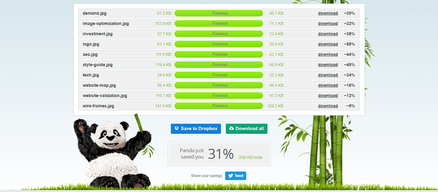
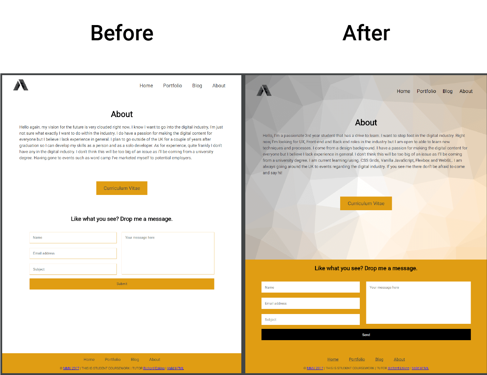
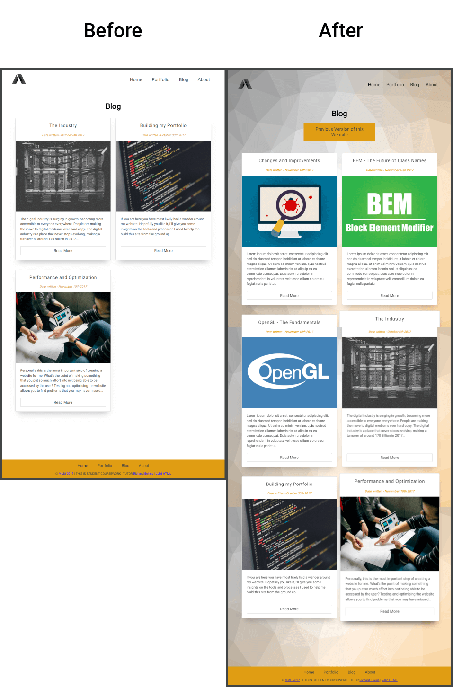
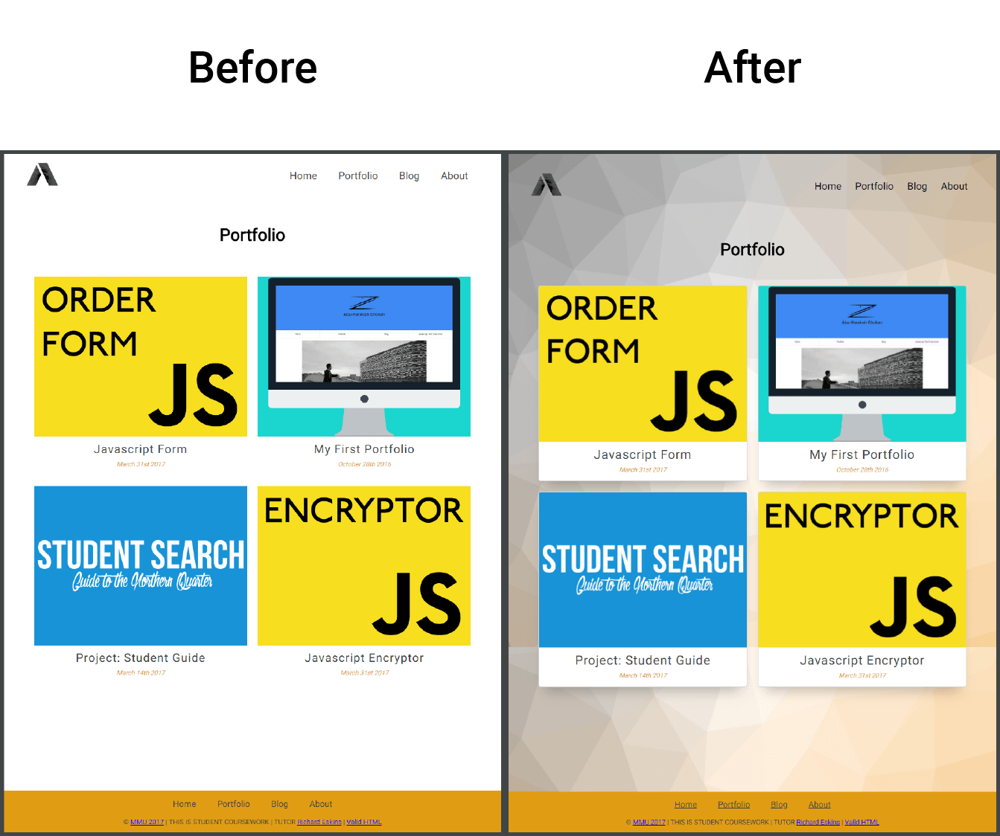

Changes and Improvements
Why do I need changes?
A project is never really finished is something I deeply believe in. There are always tweaks and improvements that can be applied to any project. Being constructively criticize by peers, tutors and professionals was an insightful process.
For the initial project, I got a first mark, but my interest laid in how to achieve the marks I missed out on. This gave me an incentive to push changes. Not only front-end changes but back-end ones too.
Time to Redesign and Rebuild
We need more speed!
When it comes to web development speeding up website load times directly affect conversion rates. In my case I had just learnt about compressing the image, I used a website called tinypng.com this allowed me to decrease. For one of my image folder, I decrease the file sizes by 31%. I did this for all the images on my web page. Originally my images folder took up 2.09mb this size included the initial image optimisation I included. And Now it’s 1.67mb, That’s a 22.34% decrease in size. This is considering that I added some more images on the pages as well.
It's all about consistency
One thing I didn't really think about was consistent throughout the website. From industry professionals, I was made aware that my pages really differ in style. On the index page, there was a piece of low poly artwork than when it came to the rest of the website it was plain and quite boring. Also, my portfolio page had a flat card design whereas my blog page had a border and shadow. It was all a mess.
To fix these issues, I made a low poly piece of art work to go on every page as a background, to give the pages a sense of connection. As for my portfolio changes, I adjusted the tiles to look like the blog page ones.
Feedback was given about the contact form, it wasn’t that easy to see with a glow like that and it seemed out of place, I took inspiration from my peers and integrated a background. You can see the before and after below.
  The smaller changes
There is was a couple of usability changes that were done firstly, the logo wasn’t clickable. What was I thinking? Initially, I didn’t really consider return users to the website. One thing pointed out by the feedback was to give the users options on how to navigate. The blog cards were only clickable on the “Read more” button this did frustrate a lot of users. A similar thing was occurring with the portfolio page. To solve this problem, I surrounded the element in an anchor tag making the user experience that bit easier.
It’s not all bad
For the most part, I did get positive feedback on the website, on the initial design, with the new implementations I believe it does make it look like a complete website. But even so, I believe a project can always be improved. I’m always challenging myself to find ways to improve it.
Word Count: 487
Refrences:
The Daily Egg. (2018). 20 Ways to Speed Up Your Website – and Improve Conversion by 7%. [online] Available at: https://www.crazyegg.com/blog/speed-up-your-website/ [Accessed 9 Mar. 2018]